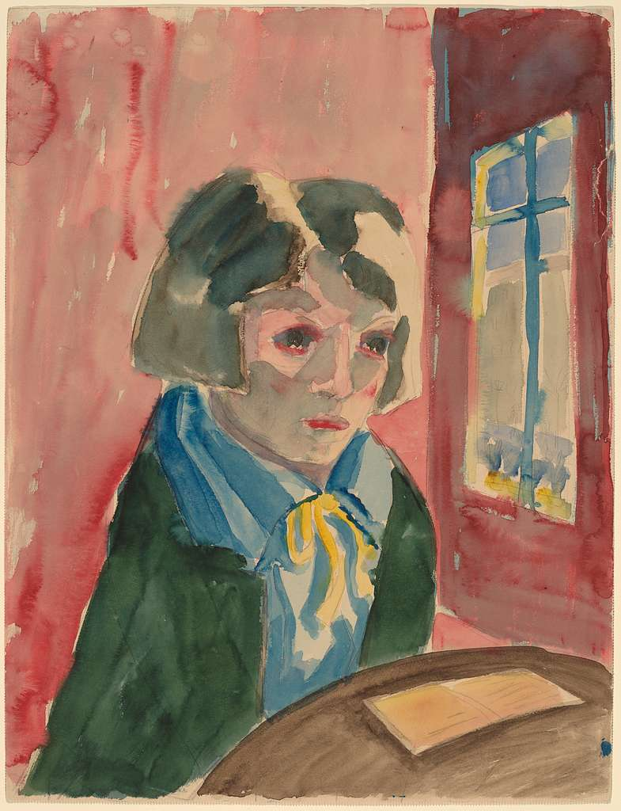

“Self-Portrait with Window”
Clara Weiss (German, 1886–1932)
Oil on canvas, 1912 A rare example of early 20th-century female portraiture, Weiss’s self-portrait combines Expressionist brushwork with a stark, direct gaze. The work provides insight into women’s growing presence in the European avant-garde.